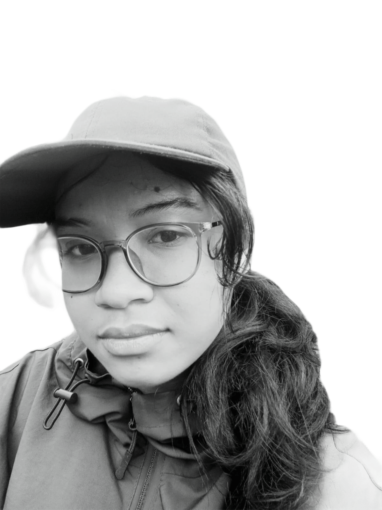
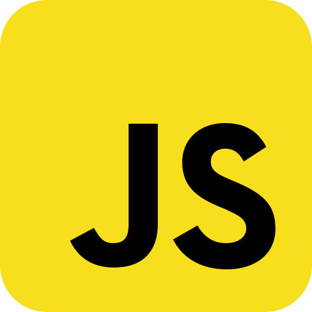
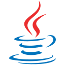
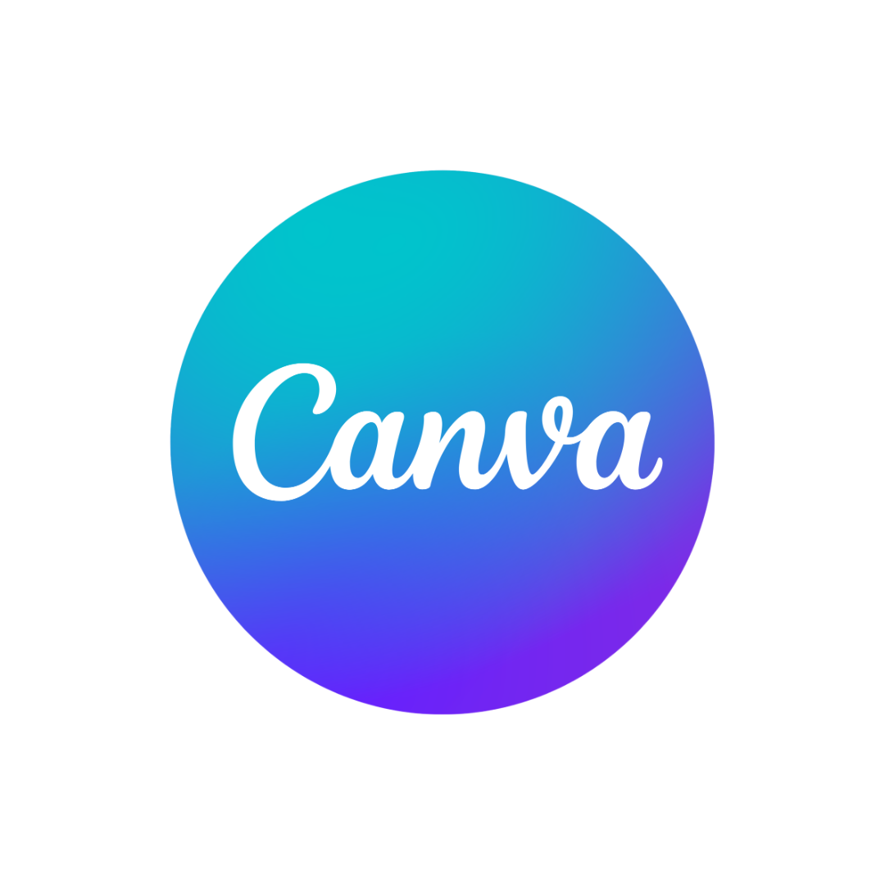

Profil
Pengalaman
- Pengembangan Web SKKPD (2025):
Membangun aplikasi Sistem Kredit Kompetensi Peserta Didik menggunakan PHP, SQL, dan framework Tailwind CSS sebagai proyek akhir di SMK Rekayasa Perangkat Lunak (RPL).
- Pengembangan Web Apotek (2024):
Membangun aplikasi Sistem Kredit Kompetensi Peserta Didik menggunakan PHP, SQL, dan framework Tailwind CSS sebagai proyek akhir di SMK Rekayasa Perangkat Lunak (RPL).
- pengembang Webside Teba Wisata (2023):
Platform informasi destinasi Ubud yang dibangun dengan Bootstrap 5 untuk pengalaman eksplorasi wisata yang responsif dan interaktif.
Keterampilan



Sertifikasi
- Software Development: Junior Programmer (2025-2028)
Badan Sertifikasi Profesi Nasional